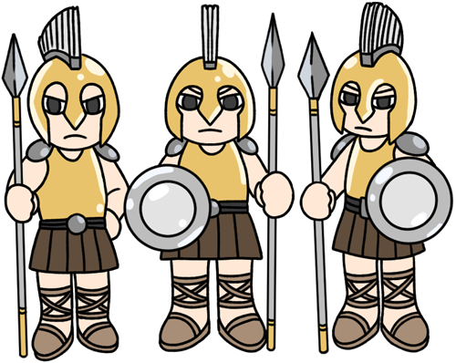
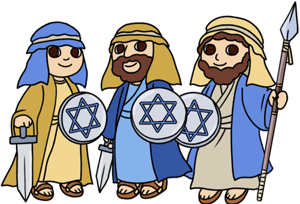
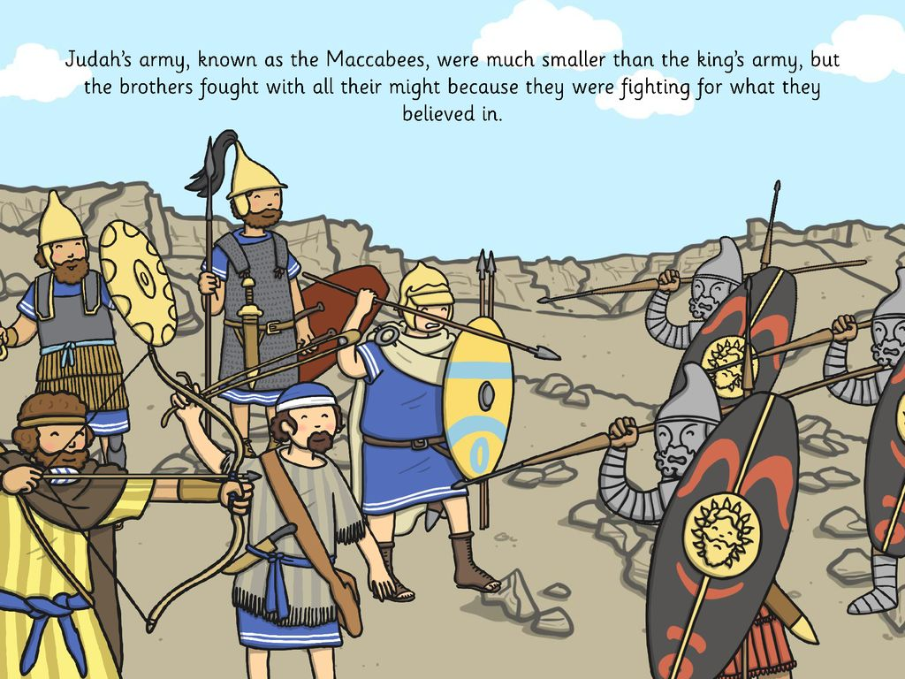
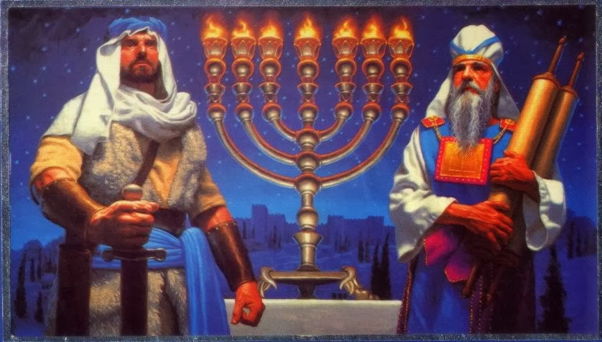
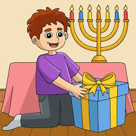
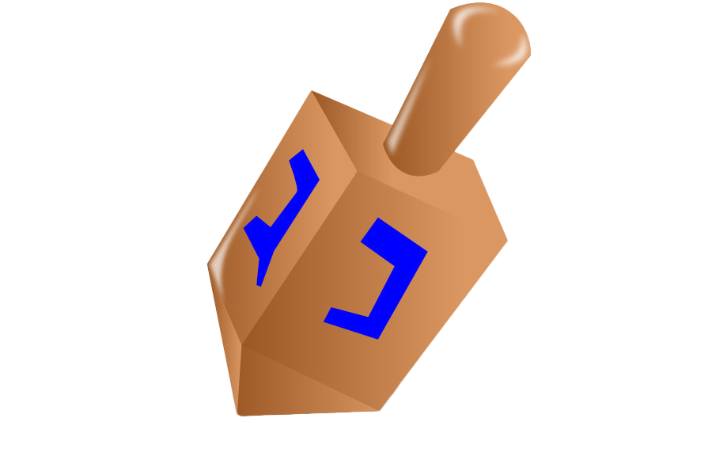
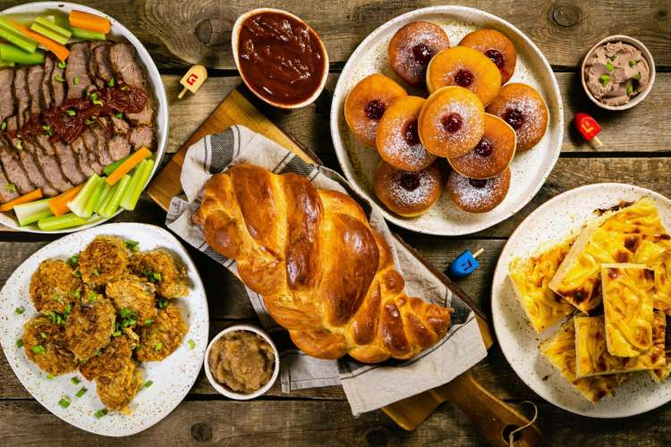

The story behind Hanukkah:
The Jews were under the oppressive rule of the Greeks and their king Antiochus. He wanted all Jews to be forcefully converted and forced them to eat pork and denounce God. Matityahu and the Macabee family decided to fight back, and led by Judah the Macabee they went to war with the Greeks. Even with a much smaller army they miraculously won. When going to the temple to light the menorah to thank God, they realized they only had enough oil to keep it lit for one day, but there was a miracle that made it last for eight days. This is why Jewish people light their menorahs for eight nights of Hanukkah.
- 
- 
- 
- 
Other Hanukkah Traditions:
For every night of Hanukkah, children recieve one gift after lighting the menorah. People also play dreidel and bet on which side the dreidel will land on. In addition, Hanukkah has traditional foods that are supposed to be oily symbolic of the menorah. This includes jelly donuts and latkes (potato pancakes).
  